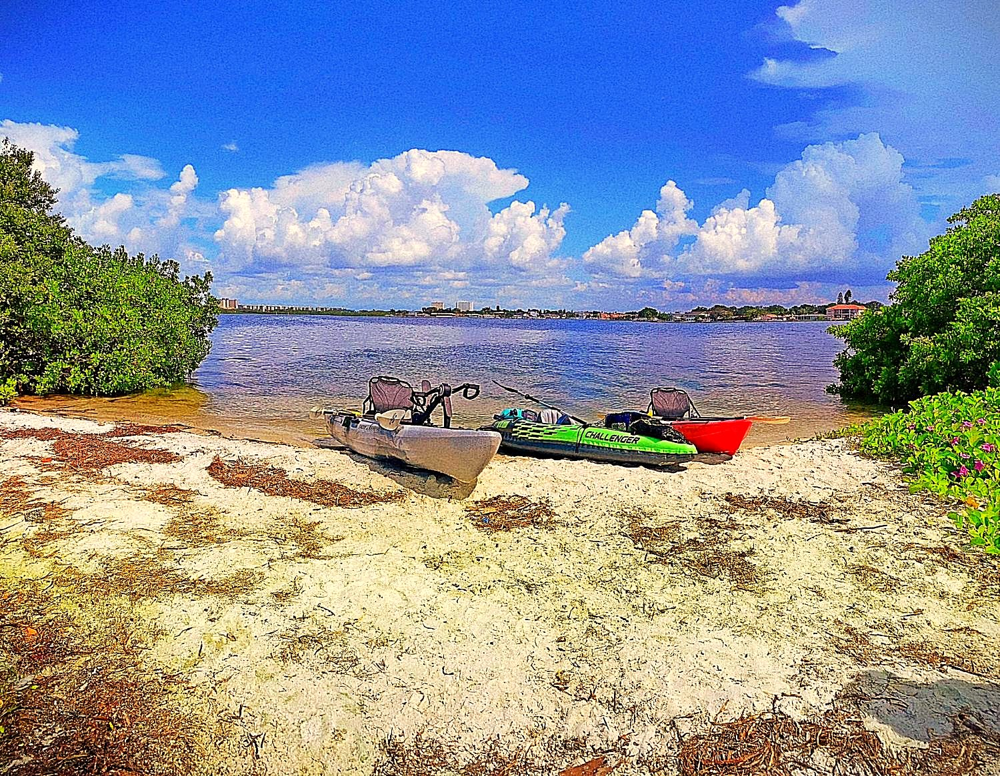
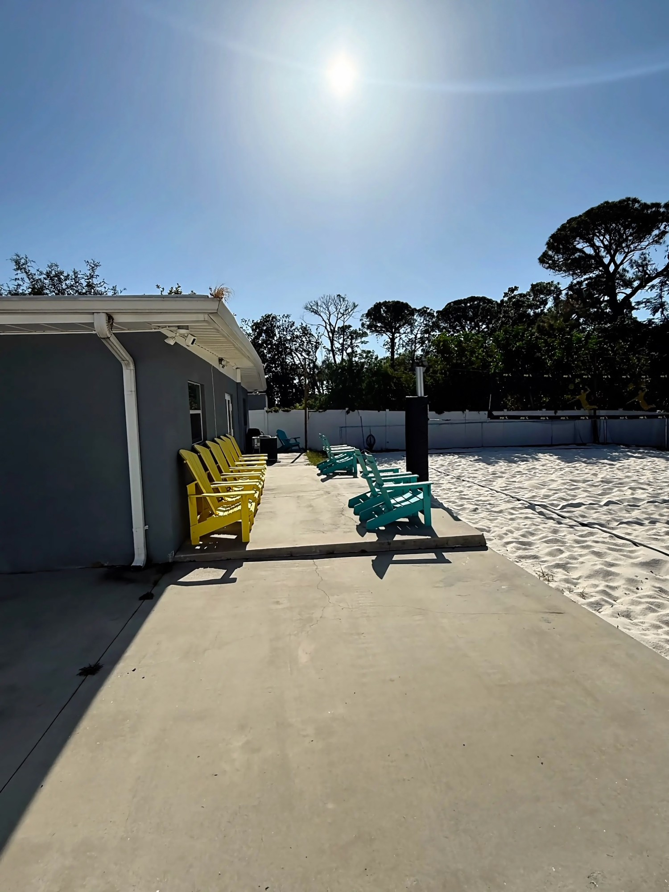

Ted Peters Famous Smoked Fish
Open-air picnic tables, mullet and mahi smoked over red oak since 1951, German potato salad, cold beer. Cash only. Closed Monday and Tuesday.
South Pasadena · 5 min
The house sits in the quiet South Pasadena corridor between Gulfport and St. Pete Beach. Drive times are for normal traffic. Beach traffic on a Saturday in March can add ten minutes to anything on the barrier islands, and the Sunshine Skyway adds the best view in Florida to anything south.
Beach chairs, umbrellas and a cooler are in the bin by the door. Parking on the islands is metered almost everywhere, so bring the parking app and go early on weekends.
| Beach | Why go | From the house |
|---|---|---|
| St. Pete Beach, Upham Beach and Corey Avenue | Our default. Wide, white, and over the Corey Causeway before the coffee cools. Corey Avenue has the shops and the Sunday market. | 4 minabout 2 mi |
| Gulfport Beach and waterfront | Calm bay water, a small-town main street, the casino ballroom, and the best sunset-with-a-drink spots that are not on the Gulf. | 9 minabout 2.5 mi |
| Sunset Beach, Treasure Island | Narrow, quieter, and the right name. Walk north toward the beach bars or south toward the pass. | 11 minabout 3.5 mi |
| Treasure Island Beach | The widest stretch of sand in the county and home to the public beach volleyball courts. Bring a ball. | 11 minabout 3.5 mi |
| Madeira Beach and John's Pass Village | Boardwalk, dolphin boats, fishing charters, and a beach a block away. | 16 minabout 6 mi |
| Pass-a-Grille Beach | The historic end of St. Pete Beach. Eighth Avenue for breakfast, the Hurricane rooftop for sunset, the sand in between. | 19 minabout 6.5 mi |
| Shell Key Preserve | Boat-access only. The shuttle leaves from Tierra Verde. Shelling, birds, no buildings. Take water. | 17 min to the shuttleabout 7 mi |
| Fort De Soto Park, North Beach | Consistently ranked among the best beaches in the country. A Civil War-era fort, kayak launches, dog beach, and the ferry to Egmont Key. | 30 minabout 13 mi |
| Indian Rocks Beach | Low-key, residential, fewer crowds. A good excuse to drive the Gulf Boulevard scenic route north. | 30 minabout 14 mi |
| Clearwater Beach | The famous one. Pier 60 sunset festival nightly, the marine aquarium, and the crowds to match. | 40 minabout 21 mi |
| Honeymoon Island and Caladesi Island | State park beaches north of Dunedin. Caladesi is ferry-access and routinely tops national lists. | 55 minabout 27 mi |
Call ahead for a table of eight anywhere on a weekend. We have listed what each place is for, not just what it serves.
Open-air picnic tables, mullet and mahi smoked over red oak since 1951, German potato salad, cold beer. Cash only. Closed Monday and Tuesday.
South Pasadena · 5 minItalian in a garden courtyard in Gulfport's village. Book the long table and let them bring the wine.
Gulfport · 8 minThree stories in Pass-a-Grille. Grouper sandwich downstairs, then the rooftop bar as the sun goes.
Pass-a-Grille · 19 minOn Gulfport's waterfront across from the beach. Open late, loud in the best way, a staple for a reason.
Gulfport · 9 minGulfport's breakfast institution. Get there before nine on weekends or bring patience.
Gulfport · 8 minFrench toast and Benedicts with the bay in front of you. The quieter morning option.
Gulfport · 9 minA Pass-a-Grille staple since 1938. Counter seats, big plates, and the beach across the street.
Pass-a-Grille · 19 minBeachside café on the sand at Pass-a-Grille. Tacos, fish sandwiches, and the best lunch view for the money.
Pass-a-Grille · 19 minChef-owned fine dining on historic Eighth Avenue. Local and seasonal, a short menu done properly. Reserve early.
Pass-a-Grille · 19 minThe Pink Palace's dining room. Dress a little. Worth it once, especially with a drink at the Rowe Bar first.
St. Pete Beach · 12 minPicnic tables, paper towels, local grouper, tiki energy. Kids and sandy feet welcome.
St. Pete Beach · 10 minA consistent St. Pete Beach favorite for a sit-down seafood dinner without the resort prices.
St. Pete Beach · 10 minModern Italian on Central Avenue with a tasting menu and a serious wine list. The downtown reservation to make.
Downtown St. Pete · 16 minTiny, loud, and among the highest rated rooms in the city. Go early or expect a wait.
Downtown St. Pete · 16 minSide by side on Beach Drive facing the waterfront park. Parkshore for the proper dinner, Stillwaters for a big table and twenty taps.
Downtown St. Pete · 18 minTwo downtown rooms built for sharing plates and long dinners. Both take large parties.
Downtown St. Pete · 17 minA St. Pete institution: deli, bakery, espresso bar, cheese counter, and wine. Load up for the dock. Closed Sunday.
St. Petersburg · 12 minDowntown cocktails and a kitchen that runs late, for the night that keeps going after dinner.
Downtown St. Pete · 17 min| Coffee, breweries and the market | Notes | From the house |
|---|---|---|
| Bandit Coffee Co. | Central Avenue. The serious espresso stop on the way downtown. | 15 min |
| Black Crow Coffee | Grand Central District. Old house, good porch, strong pour-over. | 14 min |
| Kahwa Coffee | St. Pete's homegrown roaster, several locations across the city and beaches. | varies |
| 3 Daughters Brewing | Big taproom, games, food trucks, frequent live music. Good for the whole group. | 14 min |
| Green Bench Brewing | The downtown beer garden. Mead and cider next door at the same address. | 15 min |
| Gulfport Tuesday Fresh Market | Tuesday mornings on Beach Boulevard: produce, bread, local makers. Art Walk the first Friday and third Saturday evening. | 8 min |
| Saturday Morning Market, downtown | One of the largest in the Southeast, October through May, at Al Lang Stadium. Summer market moves to Williams Park. | 17 min |
| Place | What it is | From the house |
|---|---|---|
| Dolphin Landings Charters | Sailing and dolphin-watch trips from St. Pete Beach, including Shell Key shelling runs. Book a sunset sail for the group. | 10 min |
| John's Pass Village and Hubbard's Marina | Boardwalk, dolphin cruises, deep-sea fishing, parasailing, and rentals. The tourist strip done right. | 16 min |
| The St. Pete Pier | Twenty-six acres over the bay: Doc Ford's and Teak for dinner, a splash pad, the Bending Arc sculpture, bike rentals, and the best skyline view. | 18 min |
| The Dalí Museum | The largest Dalí collection outside Spain in a building worth the trip on its own. Open late on Thursdays. Buy timed tickets. | 18 min |
| Museum of Fine Arts and the Chihuly Collection | Both on or near Beach Drive. Pair either with lunch and the waterfront parks. | 18 min |
| Central Avenue | Murals, galleries, vintage shops and bars from downtown through the Grand Central and EDGE districts. Start at the 600 block and wander. | 16 min |
| Sunken Gardens | A century-old botanical garden with flamingos, a few blocks from downtown. | 18 min |
| Boyd Hill Nature Preserve | Boardwalk trails through pine flatwoods and marsh on Lake Maggiore. Gators, tortoises, and quiet. | 16 min |
| Weedon Island Preserve | Mangrove kayak tunnels on Tampa Bay. Rent on site or launch your own. | 30 min |
| Fort De Soto Park | Beach, fort, fishing piers, kayak and bike rentals, and the ferry to Egmont Key for snorkeling and the lighthouse. | 30 min |
| Tropicana Field and Al Lang Stadium | Rays baseball and Rowdies soccer. Check each team's schedule and venue before you plan around it. | 14 min |
| Clearwater Marine Aquarium and Pier 60 | Rescued dolphins and sea turtles, then the nightly sunset festival on the pier. | 40 min |
| Tampa: Riverwalk, Ybor City, Busch Gardens, ZooTampa | A full day over the bay. Ybor for Cuban sandwiches and cigars, Busch Gardens for the coasters. | 40 min |
| Sarasota: The Ringling and Siesta Key | Over the Sunshine Skyway. The circus museum and the mansion in the morning, Siesta's quartz sand in the afternoon. | 45 min |
 Your court
Your courtWhen you want a crowd, a pickup game or a tournament, St. Pete has more public sand than almost any city in the country. These are the courts we play on, and the St. Pete Ballers Club runs pickup, leagues and socials across them year-round.
| Place | Notes | From the house |
|---|---|---|
| Publix, Pasadena Shopping Center | Full grocery, pharmacy, deli subs, and bagged ice. The everyday stop. | 5 min |
| Walmart Neighborhood Market | Groceries and basics, very close, open early and late. | under 5 min |
| Mazzaro's Italian Market | Wine, cheese, bread, prepared food. The upgrade for a dinner in. Closed Sunday. | 12 min |
| Trader Joe's and Whole Foods | Both on 4th Street North, across town. Worth it once for a long stay. | 25 min |
| Tyrone Square Mall and the Tyrone corridor | Target, department stores, pharmacies, sporting goods, and most national chains. | 12 min |
| Beach gear and surf shops, Gulf Boulevard | Boogie boards, extra chairs, sunscreen, and rentals up and down St. Pete Beach and Treasure Island. | 10 min |
| Liquor and wine | Total Wine and ABC Fine Wine have stores on the Tyrone corridor; Publix carries beer and wine. | 12 min |
In an emergency, call 911. Poison Control is 1-800-222-1222. The nearest 24-hour emergency room is about five minutes away.
| Facility | Notes | From the house |
|---|---|---|
| HCA Florida Pasadena Hospital | Full-service hospital with a 24-hour emergency room, on Pasadena Avenue. The closest ER. | 5 minabout 1 mi |
| HCA Florida St. Petersburg Hospital | Larger hospital on 38th Avenue North with a 24-hour ER. | 12 minabout 4.5 mi |
| Bayfront Health St. Petersburg | Downtown. The region's Level II trauma center. | 16 minabout 6.5 mi |
| St. Anthony's Hospital | Downtown, BayCare. Full-service with a 24-hour ER. | 16 minabout 6.5 mi |
| Johns Hopkins All Children's Hospital | Downtown. Pediatric emergency room and children's specialty care. | 16 minabout 6.5 mi |
| Urgent care | Several walk-in clinics along the Tyrone corridor and Central Avenue, including AFC Urgent Care Tyrone, open seven days. Check hours before driving. | 12 min |
| Pharmacies | Publix pharmacy at Pasadena Shopping Center, plus CVS and Walgreens on Pasadena Avenue and Central Avenue. | 5 min |
| School | Notes | From the house |
|---|---|---|
| Stetson University College of Law | Gulfport. The oldest law school in Florida, on a historic Mediterranean Revival campus. | 8 minabout 2 mi |
| St. Petersburg College, Gibbs Campus | The college's original campus, on 66th Street North. | 13 minabout 5 mi |
| Eckerd College | Waterfront liberal arts campus on Boca Ciega Bay at the south end of the city. | 14 minabout 5.5 mi |
| USF St. Petersburg | Downtown waterfront campus next to the Dalí and the Pier. | 17 minabout 7 mi |
| St. Petersburg College, Seminole Campus | North of the house in Seminole. | 19 minabout 8 mi |
| University of Tampa | Downtown Tampa, on the Hillsborough River. | 40 minabout 25 mi |
| USF Tampa | The main University of South Florida campus in north Tampa. | 50 minabout 34 mi |
| Destination | Notes | From the house |
|---|---|---|
| St. Pete–Clearwater International (PIE) | The small, easy airport. Allegiant and a few others. Fifteen minutes from curb to car. | 25 minabout 14 mi |
| Tampa International (TPA) | The major airport, across the Howard Frankland or Gandy bridges. Among the best-run large airports in the country. | 35 minabout 23 mi |
| Gulfport | The artsy small town next door: Beach Boulevard, the waterfront, the Tuesday market. | 8 minabout 2 mi |
| St. Pete Beach and Treasure Island | The barrier-island beach towns directly west. | 4 to 11 min2 to 4 mi |
| Downtown St. Petersburg | Museums, Beach Drive, Central Avenue, the Pier, and most of the nightlife. | 17 minabout 7 mi |
| Clearwater and Clearwater Beach | North up the Gulf. Pier 60, the aquarium, and the big beach. | 35 to 40 min18 to 21 mi |
| Dunedin | Walkable downtown, breweries, the Pinellas Trail, and the causeway to Honeymoon Island. | 40 minabout 22 mi |
| Tampa | Riverwalk, Ybor City, Amalie Arena, Raymond James Stadium, Busch Gardens. | 40 minabout 26 mi |
| Anna Maria Island | Over the Skyway and west. Old Florida beach town with no high-rises. | 35 minabout 22 mi |
| Bradenton | Across the Skyway. The Riverwalk, the Village of the Arts, and IMG Academy. | 35 minabout 24 mi |
| Sarasota | The Ringling, St. Armands Circle, Siesta Key. | 45 minabout 38 mi |
| Tarpon Springs | The Greek sponge docks at the top of the county. Lunch at any of the tavernas. | 55 minabout 33 mi |
| Orlando theme parks | Interstate 4 across the state. Leave early, come back for the court at sunset. | 1 h 40 minabout 96 mi |
Distances and drive times are approximate, measured from the house in normal traffic, and rounded. Hours, menus and prices change; check before you go, especially for large parties and seasonal attractions. Last reviewed November 2026.
